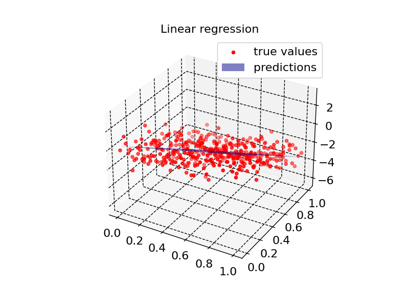
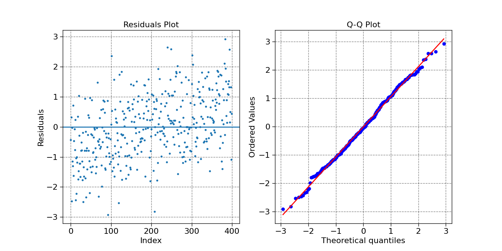
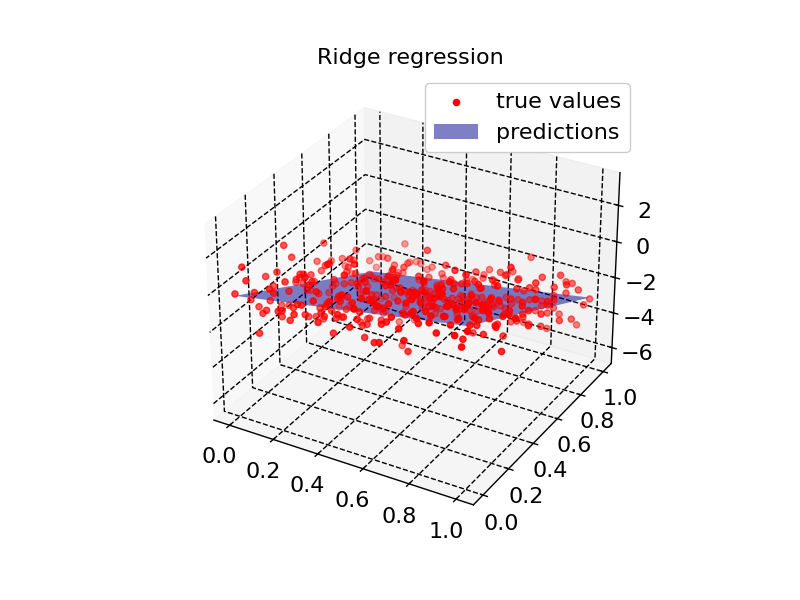
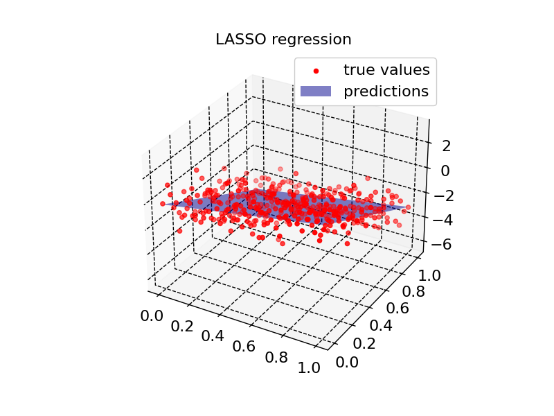
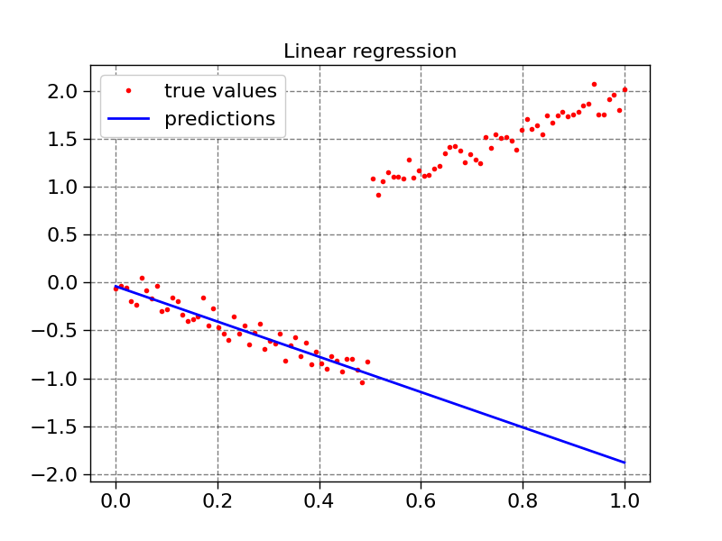
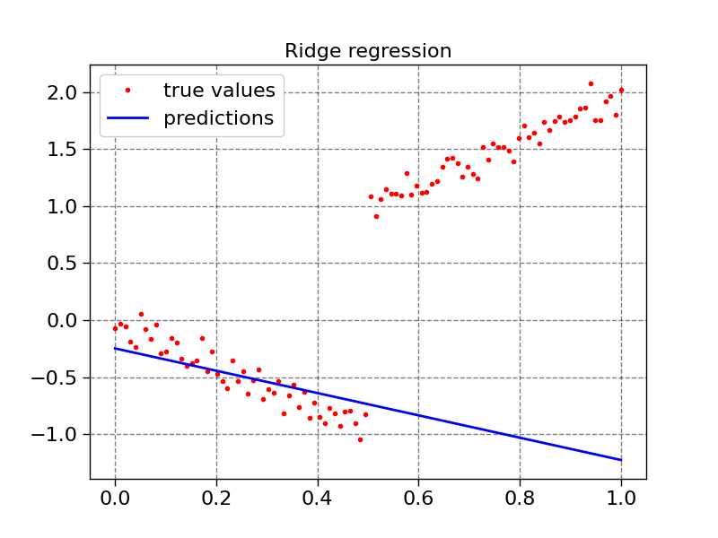
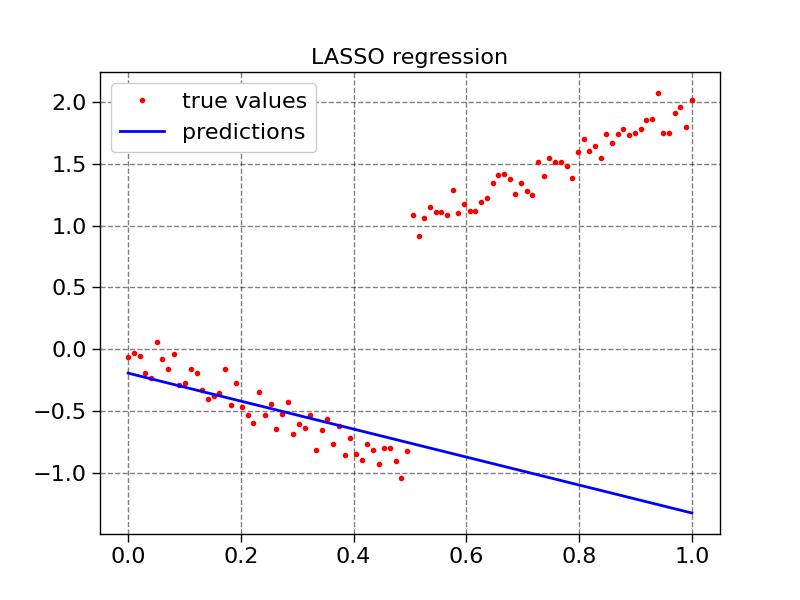
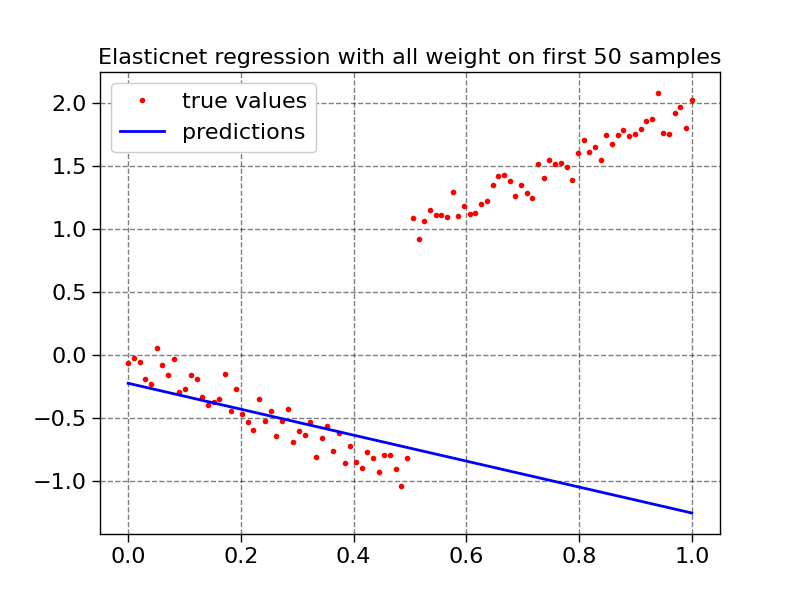
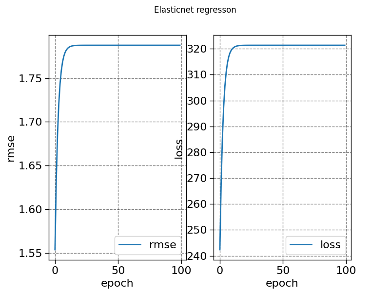
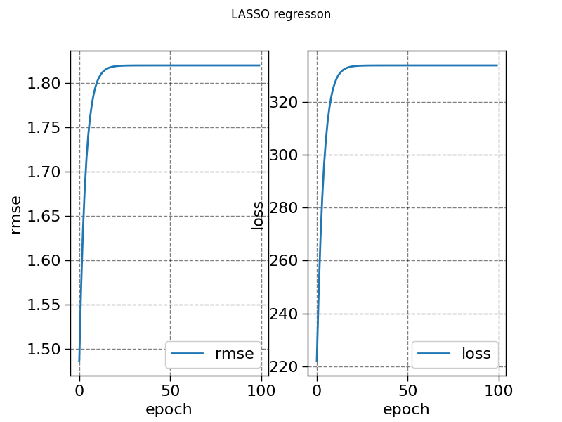

Note
Go to the end to download the full example code.
Linear and Regularized Regression Models on Synthetic Data
This script demonstrates the use of linear regression models and their regularized counterparts (Ridge, LASSO, and ElasticNet) on synthetic data. The models are fitted to 1D and 2D datasets, and performance is evaluated through residual analysis, summary statistics, and visualizations.
The following models are used: - Linear Regression - Ridge Regression - LASSO Regression - ElasticNet Regression
This script also explores the effect of sample weighting on model training, with particular focus on LASSO and ElasticNet regressions, and tracks training metrics such as loss and RMSE during optimization.
- 
- 
- 
- 
- 
- 
- 
- 
- 
- 
======================== SUMMARY ========================
Residual quantiles: (-2.918, -0.777, -0.043, 0.796, 2.925)
Coefficient of determination: 0.678
Adjusted R squared: 0.676
======================== SUMMARY ========================
Residual quantiles: (-2.913, -0.607, -0.007, 0.684, 2.469)
Coefficient of determination: 0.755
Adjusted R squared: 0.753
======================== SUMMARY ========================
Residual quantiles: (-2.911, -0.616, -0.024, 0.674, 2.448)
Coefficient of determination: 0.755
Adjusted R squared: 0.754
======================== SUMMARY ========================
Residual quantiles: (-2.912, -0.611, -0.016, 0.674, 2.459)
Coefficient of determination: 0.755
Adjusted R squared: 0.754
======================== SUMMARY ========================
Residual quantiles: (0.039, 1.0, 1.96, 2.92, 3.881)
Coefficient of determination: -13.985
Adjusted R squared: -14.138
======================== SUMMARY ========================
Residual quantiles: (0.248, 0.992, 1.737, 2.482, 3.226)
Coefficient of determination: -10.09
Adjusted R squared: -10.203
======================== SUMMARY ========================
Residual quantiles: (0.195, 0.978, 1.761, 2.544, 3.328)
Coefficient of determination: -10.574
Adjusted R squared: -10.692
======================== SUMMARY ========================
Residual quantiles: (0.228, 0.985, 1.743, 2.5, 3.257)
Coefficient of determination: -10.224
Adjusted R squared: -10.338
import torch
import matplotlib.pyplot as plt
import scipy.stats as stats
import scienceplots
from DLL.MachineLearning.SupervisedLearning.LinearModels import LinearRegression, RidgeRegression, LASSORegression, ElasticNetRegression
from DLL.Data.Metrics import r2_score, adjusted_r2_score
from DLL.DeepLearning.Optimisers import LBFGS, ADAM
plt.style.use(["grid", "notebook"])
def summary(predictions, true_values, n_features):
print("======================== SUMMARY ========================")
residuals = true_values - predictions
residual_quantiles = torch.min(residuals).item(), torch.quantile(residuals, 0.25).item(), torch.quantile(residuals, 0.50).item(), torch.quantile(residuals, 0.75).item(), torch.max(residuals).item()
print(f"Residual quantiles: {tuple(round(item, 3) for item in residual_quantiles)}")
r_squared = r2_score(predictions, true_values)
print(f"Coefficient of determination: {round(r_squared, 3)}")
adjusted_r_squared = adjusted_r2_score(predictions, true_values, n_features)
print(f"Adjusted R squared: {round(adjusted_r_squared, 3)}")
def plot_residuals(predictions, true_values):
fig, ax = plt.subplots(1, 2, figsize=(14,7))
residuals = true_values - predictions
ax[0].plot(residuals, ".")
ax[0].axhline(y=torch.mean(residuals))
stats.probplot(residuals, dist="norm", plot=ax[1])
ax[0].set_title('Residuals Plot')
ax[0].set_xlabel('Index')
ax[0].set_ylabel('Residuals')
ax[1].set_title('Q-Q Plot')
def plot1d(x, true_values, predictions, title):
fig = plt.figure()
ax = fig.add_subplot(111)
ax.plot(x, true_values, ".", color="red", label="true values")
ax.plot(x, predictions, color="blue", label="predictions")
ax.legend()
ax.set_title(title)
def plot2d(model, X, true_values, title):
x = X[:, 0]
y = X[:, 1]
fig = plt.figure()
ax = fig.add_subplot(111, projection='3d')
ax.scatter(x, y, true_values, label="true values", color="red")
x = torch.linspace(torch.min(x), torch.max(x), 2)
y = torch.linspace(torch.min(y), torch.max(y), 2)
XX, YY = torch.meshgrid(x, y, indexing="xy")
X = XX.flatten()
Y = YY.flatten()
X_input = torch.stack((X, Y), dim=1)
ax.plot_surface(XX, YY, model.predict(X_input).reshape(XX.size()), color="blue", alpha=0.5, label="predictions")
ax.legend()
ax.set_title(title)
x = torch.linspace(0, 1, 20)
y = torch.linspace(0, 1, 20)
XX, YY = torch.meshgrid(x, y, indexing="xy")
X = XX.flatten()
Y = YY.flatten()
X_input = torch.stack((X, Y), dim=1)
Z = 2 * X - 5 * Y + torch.normal(0, 1, size=X.size())
model1 = LinearRegression()
model2 = RidgeRegression(alpha=1.0)
model3 = LASSORegression(alpha=1.0)
model4 = ElasticNetRegression(alpha=1.0, l1_ratio=0.5)
model1.fit(X_input, Z, method="tls")
summary(model1.predict(X_input), Z, X_input.shape[1])
plot2d(model1, X_input, Z, "Linear regression")
plot_residuals(model1.predict(X_input), Z)
model2.fit(X_input, Z)
summary(model2.predict(X_input), Z, X_input.shape[1])
plot2d(model2, X_input, Z, "Ridge regression")
model3.fit(X_input, Z, epochs=100)
summary(model3.predict(X_input), Z, X_input.shape[1])
plot2d(model3, X_input, Z, "LASSO regression")
model4.fit(X_input, Z, epochs=100)
summary(model4.predict(X_input), Z, X_input.shape[1])
plot2d(model4, X_input, Z, "Elasticnet regression")
plt.show()
X = torch.linspace(0, 1, 100).unsqueeze(dim=1)
weight = torch.zeros_like(X.squeeze())
weight[:50] = 1
# weight = None
y = 2 * X.squeeze() + torch.normal(0, 0.1, size=(100,))
y[:50] = (-2 * X.squeeze() + torch.normal(0, 0.1, size=(100,)))[:50]
model1.fit(X, y, sample_weight=weight, method="ols")
summary(model1.predict(X), 2 * X.squeeze(), 1)
plot1d(X, y, model1.predict(X), "Linear regression")
model2.fit(X, y, sample_weight=weight)
summary(model2.predict(X), 2 * X.squeeze(), 1)
plot1d(X, y, model2.predict(X), "Ridge regression")
history_lasso = model3.fit(X, y, sample_weight=weight, epochs=100, metrics=["loss", "rmse"])
summary(model3.predict(X), 2 * X.squeeze(), 1)
plot1d(X, y, model3.predict(X), "LASSO regression")
history_elasticnet = model4.fit(X, y, sample_weight=weight, epochs=100, metrics=["loss", "rmse"])
summary(model4.predict(X), 2 * X.squeeze(), 1)
plot1d(X, y, model4.predict(X), "Elasticnet regression with all weight on first 50 samples")
fig, ax = plt.subplots(1, 2)
ax[0].plot(history_elasticnet["rmse"], label="rmse")
ax[1].plot(history_elasticnet["loss"], label="loss")
fig.suptitle("Elasticnet regresson")
ax[0].set_xlabel("epoch")
ax[0].set_ylabel("rmse")
ax[1].set_xlabel("epoch")
ax[1].set_ylabel("loss")
ax[0].legend()
ax[1].legend()
fig, ax = plt.subplots(1, 2)
ax[0].plot(history_lasso["rmse"], label="rmse")
ax[1].plot(history_lasso["loss"], label="loss")
fig.suptitle("LASSO regresson")
ax[0].set_xlabel("epoch")
ax[0].set_ylabel("rmse")
ax[1].set_xlabel("epoch")
ax[1].set_ylabel("loss")
ax[0].legend()
ax[1].legend()
plt.show()
Total running time of the script: (0 minutes 1.082 seconds)